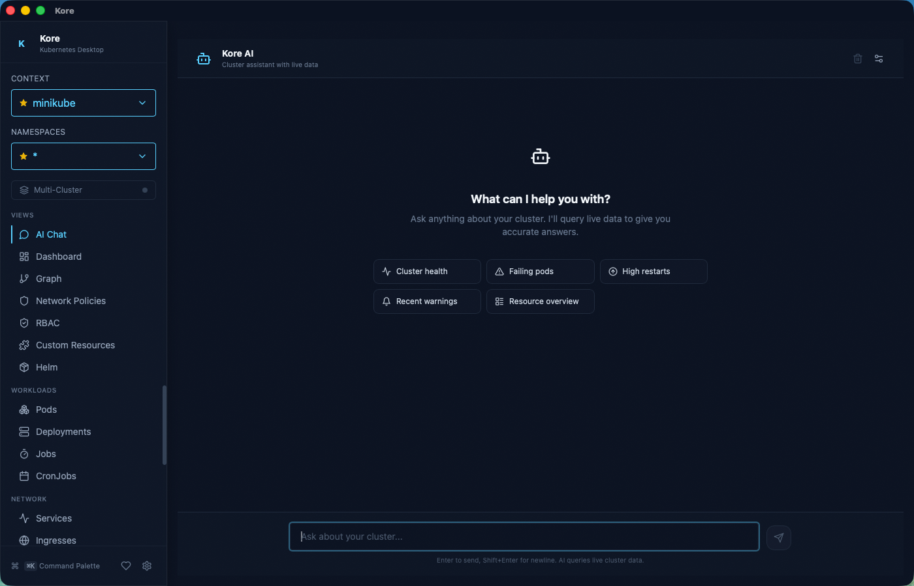
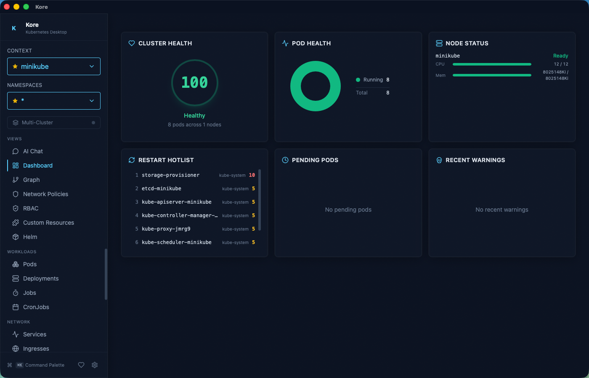
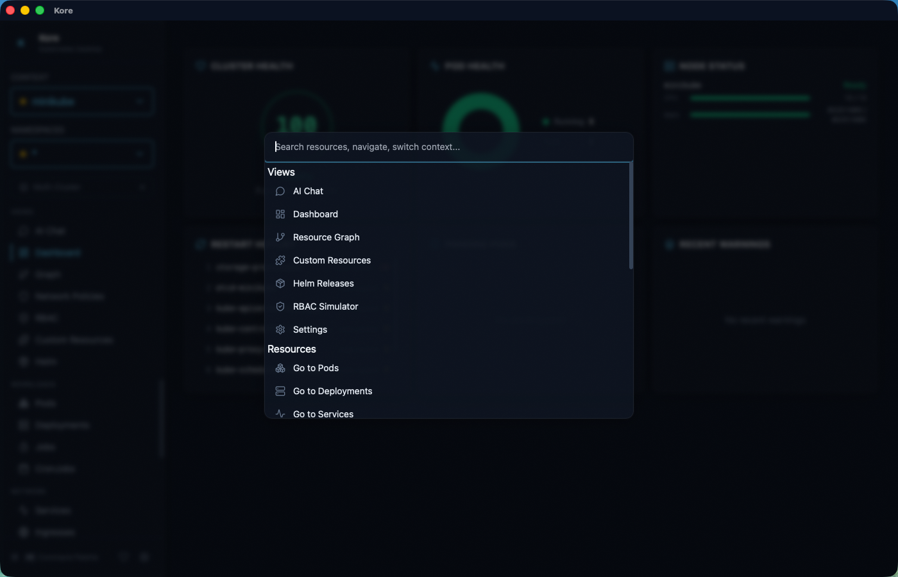

Native desktop app that combines real-time cluster monitoring, AI troubleshooting, and keyboard-driven workflows. Stop switching between kubectl, k9s, and your browser.
Built for engineers who live in the terminal but want something better.
AI Troubleshooting
Built-in AI that understands your cluster. Ask questions in natural language and get instant diagnosis with full context. Supports OpenAI, Anthropic, and Ollama.
Native Performance
Rust backend, ~80MB memory. Starts in under a second. No Electron overhead, no Chromium fork.
Real-Time Streaming
Live resource watches, pod logs, and events via Kubernetes watch API. See changes the instant they happen.
Command Palette
Cmd+K to search resources, switch views, and filter namespaces. Everything, one shortcut away.
Cluster Dashboard
Health score, pod distribution ring chart, node capacity bars, and restart hotlist. At a glance.
Resource Graph
Interactive dependency graph. Trace Ingress to Service to Deployment to Pods visually.
YAML Editor + Diff
Edit YAML in-app with syntax highlighting. Side-by-side diff preview before applying changes.
Deployment Rollback
Visual revision timeline with image diffs. One-click rollback to any previous revision.
Helm Management
Browse releases, inspect values and manifests, view history, and rollback with a click.
Multi-Cluster
Aggregate resources across multiple contexts. One table, all your clusters side-by-side.
CRD Browser
Discover and browse Custom Resource Definitions and their instances dynamically.
Port Forwarding
One-click port forwards with TCP proxying. Manage all forwards from a single panel.
Debug Containers
Inject ephemeral debug containers into running pods with one click. Pre-built images for network, HTTP, and shell debugging. No kubectl required.
Network Policy Visualizer
Interactive force-directed graph of network policies. See ingress/egress rules, pod isolation, CIDR blocks, and simulate traffic between pods.
RBAC Simulator
Visual permission matrix, role browser, reverse lookup, forbidden error analysis, and natural language queries. Impersonate any identity to test access.
Vim navigation
Persistent events
Pod exec shell
Multi-pod logs
Label filtering
Pinned resources
Restart sparklines
Debug containers
Traffic simulation
RBAC simulator
Interface
See it in action
Dark theme, monospace typography, and interfaces designed for engineers working at 2 AM.
AI Troubleshooting
Ask your cluster anything
Built-in AI assistant with full cluster context. Diagnose CrashLoopBackOff, trace networking issues, and get actionable fixes in natural language.
OpenAI, Anthropic, and Ollama
Streaming responses
Context-aware per resource

Cluster Dashboard
Cluster health at a glance
Health score from 0 to 100, pod status distribution, node resource utilization, and a restart hotlist that surfaces problems before they escalate.
Pod ring chart
Node capacity bars
Restart hotlist

Command Palette
Everything, one shortcut away
Press Cmd+K to open instant access to resources, views, namespaces, and actions. Navigate your cluster without leaving the keyboard.
Fuzzy resource search
View switching
Quick filters and actions

Comparison
How Kore stacks up
Feature-by-feature against the tools you already know.
Kore
k9s
Lens
K8s Dashboard
Rancher
Native desktop app
✓
✓
✓
✕
✕
AI chatbot
✓
✕
✕
✕
✕
GUI + keyboard navigation
✓
TUI only
✓
✓
✓
Real-time resource watch
✓
✓
✓
✓
✓
Dependency graph
✓
✕
Extension
✕
✕
Deployment rollback UI
✓
Basic
✕
✕
✓
YAML diff before apply
✓
✕
✓
✕
✓
Helm management
✓
Basic
✓
✕
✓
CRD browsing
✓
✓
✓
Limited
✓
Multi-cluster view
✓
✕
✓
✕
✓
Persistent event history
✓
✕
✕
✕
✕
Command palette
✓
Fuzzy
✕
✕
✕
Port forwarding UI
✓
✓
✓
✕
✕
Ephemeral debug containers
✓
✕
✕
✕
✕
Network policy visualizer
✓
✕
Extension
✕
✕
RBAC simulator
✓
✕
✕
✕
✕
Memory usage
~80 MB
~30 MB
~400 MB
~50 MB
~300 MB
Performance
Built different
Native Rust backend means no Node.js runtime, no Chromium fork, no 400 MB memory footprint.
0MB
Memory Usage
vs ~400 MB (Lens)
0MB
Binary Size
vs ~200 MB (Electron)
<0s
Startup Time
vs 3-5s (Lens)
Rust
Backend Runtime
vs Node.js / Go
Keyboard-First
Vim-inspired navigation
Navigate your entire cluster without touching the mouse.
⌘ KCommand palette
/Focus search
jkNavigate rows
lEnter detail view
hGo back
1 – 6Switch tabs
?Shortcut overlay
⌘ PPin resource
BDebug container
⌘ ⇧ RRBAC simulator
Support
Support Kore's development
Kore is free, open-source, and MIT licensed. Your sponsorship helps sustain active development, fund new features, and keep the project independent.
Download a prebuilt binary or build from source in two commands.
# Clone and buildgit clone https://github.com/eladbash/kore && cd korenpm install && npm run tauri:build# The .app bundle will be in src-tauri/target/release/bundle/macos/